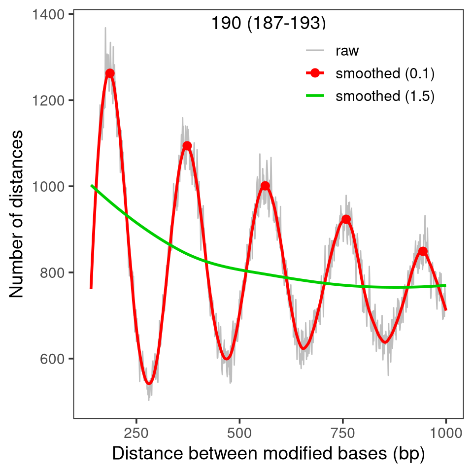

A prominent source of signal in single molecule footprinting data are nucleosomes that protect the DNA that is wound around the histones but leave the DNA between nucleosome particles, the linkers, accessible to modifications.
In this chapter, we illustrate how footprintR can be used to place single nucleosomes onto individual reads (see Section 5.3) or estimate the average distance between neighboring nucleosomes (Section 5.4).
5.1 Preparation
We first load the packages and the genome needed for these tasks.
Our data is obtained from modBam file from a wild-type sample, for which 6mA modification calling has been performed. We use the readModBam function to read data from an 2000-bp region around a CTCF binding site on chromosome 8 and store it in a SummarizedExperiment object. For more information about reading data with footprintR, see Chapter 2.
The calcFootprintScores function uses a vector of weights to identify high-scoring regions on individual reads that show the modification pattern given in these weights. The score of a region on a read measures how well modification probabilities correlate with weights in the weight vector. High-scoring footprints that score above a provided threshold can be added to our se object using addFootprints, which will call calcFootprintScores internally.
In order to find nucleosomes, we construct a weight vector called wgt of a total length of 160 bp, consisting of a central 120 bp region in which we expect low modifications (the region protected by the nucleosome) flanked by two linker regions of 20 bp each in which we expect high modification. We adjust the weights in the flanks and central region such that the overall mean is close to zero:
Now we can scan the reads for high-scoring footprints and add them to the colData of our SummarizedExperiment object, under a column name given by the name argument:
Show/hide code
se <-addFootprints(se = se, wgt = wgt, thresh =0.02, name ="nucl")
ℹ calculating footprint scores
✔ calculating footprint scores [1.6s]
ℹ segmenting footprint scores
✔ segmenting footprint scores [1.1s]
The footprints are stored as a list with one element for each sample, containing an IRangesList. Its elements are the reads of that sample, and the ranges correspond to individual footprints:
Placing of individual nucleosomes in principle allows also measuring their average distance, the nucleosome repeat length (NRL). This measure can also be obtained without placing of nucleosomes, from the distribution of distances between modified bases in which multiples of the NRL are over-represented. This idea is related to the phasogram analysis described by Valouev et al. (2011).
In footprintR, this analysis can be performed by first calculating the distribution of distances between modified bases using calcModbaseSpacing:
Show/hide code
moddist <-calcModbaseSpacing(se)str(moddist)
List of 1
$ wt1: Named num [1:1000] 3306 2143 1670 1218 1122 ...
..- attr(*, "names")= chr [1:1000] "1" "2" "3" "4" ...
From this distribution, which was obtained from just 54 reads, we can accurately estimate the NRL using estimateNRL:
Alternatively, the distance distribution can also be visualized together with an estimate of the NRL using plotModbaseSpacing, either as a summary plot:
Show/hide code
plotModbaseSpacing(x = moddist$wt1)

Figure 5.3
… or as a set of three plots that illustrate the different steps of the estimation:
5.5 Read autocorrelation also shows nucleosomal signal
An alternative way to visualize or measure nucleosome repeat length is to plot the autocorrelation of reads. This is obtained by shifting the reads relative to themselves and calculating the pearson correlation of the modification vector in the overlapping range. As you can see in the plot below, this shows high correlation for the first ~50 nucleotides (corresponding to the average length of a nucleosome linker or footprint), then switches to negative correlations before rising again and peaking at about 190 nucleotides (the average nucleosome repeat length).
Nucleosomes that occupy similar positions across reads are called phased and can result for example from a sequence-specific DNA binding protein that constrains their movement along the DNA. Genomic regions with phased nucleosomes can be identified on the summary-level data by phasingScoreFourier, which calculates the strength of a periodic component in the summary-level data corresponding to the expected period of nucleosomes (see Section 5.4 for how that period can be estimated).
We start such an analysis by first reading summary-level data for a larger genomic region, in which we want to calculate phasing scores:
Finally, we calculate phasing socres for the windows in windowgr. The windowSize and the value of the numCoef argument define the period of interest \(poi = windowSize / (numCoef - 1)\) (here: 190 bp, see phasingScoreFourier for details):
Show/hide code
seFourier <-phasingScoreFourier(se = se, gr = windowgr, numCoef =5)
We can plot the window scores together with the fraction of modification. Note that the sequential windows for which the phasing score was calculated are overlapping (the window with the maximal phasing score is indicated by the red line below):
Show/hide code
# get plotting data using plotRegionp <-plotRegion(se, region = reg,tracks =list(list(trackData ="FracMod", trackType ="Smooth",smoothMethod ="rollingMean", windowSize =101)))pd <- p$layers[[1]]$data# get phasing scorespd2 <-as.data.frame(rowRanges(seFourier))pd2$position <-mid(rowRanges(seFourier))pd2$phasingScoreAbs <-assay(seFourier, "phasingScoreAbs")[, "wt1"]# visualizeggplot(mapping =aes(x = position)) +geom_tile(data = pd2,mapping =aes(y =mean(pd$value_smooth), fill = phasingScoreAbs),width = windowStep, height =Inf, alpha =0.4) +scale_fill_viridis_c() +geom_segment(data = pd2[which.max(pd2$phasingScoreAbs), , drop =FALSE],inherit.aes =FALSE,mapping =aes(x = start, xend = end, y =min(pd$value_smooth)),colour ="red", linewidth =2) +geom_line(data = pd,mapping =aes(y = value_smooth)) +ylim(range(pd$value_smooth)) +labs(x =paste0("Position on ", seqnames(reg), " (bp)"),y ="Fraction of modified bases",fill =paste0("Phasing score\n", windowStep, " bp period")) +theme_bw() +theme(legend.position ="bottom")
Valouev, Anton, Steven M. Johnson, Scott D. Boyd, Cheryl L. Smith, Andrew Z. Fire, and Arend Sidow. 2011. “Determinants of Nucleosome Organization in Primary Human Cells.”Nature 474 (7352): 516–20. https://doi.org/10.1038/nature10002.
Source Code
# Nucleosome analyses {#sec-nucleosomes}A prominent source of signal in single molecule footprinting data are nucleosomes that protect the DNA that is wound around the histones but leave the DNA between nucleosome particles, the linkers, accessible to modifications.In this chapter, we illustrate how [fmicompbio/footprintR]{.githubpkg} can be used to place single nucleosomes onto individual reads (see @sec-place-nucleosomes) or estimate the average distance between neighboring nucleosomes (@sec-estimate-nrl).## PreparationWe first load the packages and the genome needed for these tasks.```{r}#| message: false#| label: load-packagesBSgenomeName <-"BSgenome.Mmusculus.GENCODE.GRCm39.gencodeM34"library(SingleMoleculeGenomicsIO)library(footprintR)library(ggplot2)library(patchwork)library(GenomicRanges)library(SummarizedExperiment)library(BSgenomeName, character.only =TRUE)# Load genomegnm <-get(BSgenomeName)genome(gnm) <-"mm39"```## Read dataOur data is obtained from `modBam` file from a wild-type sample, for which 6mA modification calling has been performed.We use the [readModBam]{.fnio} function to read data from an 2000-bp region around a CTCF binding site on chromosome 8 and store it in a `SummarizedExperiment` object. For more information about reading data with [fmicompbio/footprintR]{.githubpkg}, see @sec-reading-data. ```{r}#| label: read-data-nrl# Read datactcfsite <-as("chr8:6622465-6622483", "GRanges")reg <-resize(ctcfsite, width =2000, fix ="center")se <-readModBam(bamfiles =c(wt1 ="data/mESC_wt_6mA_rep1.bam"),modbase ="a", regions = reg,seqinfo =seqinfo(gnm), sequenceContextWidth =1, sequenceReference = gnm)# add summary-level assaysse <-flattenReadLevelAssay(se)```## Placing nucleosome footprints {#sec-place-nucleosomes}The [calcFootprintScores]{.fn} function uses a vector of weights to identify high-scoring regions on individual reads that show the modification pattern given in these weights.The score of a region on a read measures how well modification probabilities correlate with weights in the weight vector.High-scoring footprints that score above a provided threshold can be added to our `se` object using [addFootprints]{.fn}, which will call [calcFootprintScores]{.fn} internally.In order to find nucleosomes, we construct a weight vector called `wgt` of a total length of 160 bp, consisting of a central 120 bp region in which we expect low modifications (the region protected by the nucleosome) flanked by two linker regions of 20 bp each in which we expect high modification.We adjust the weights in the flanks and central region such that the overall mean is close to zero:```{r}#| fig.height: 4#| fig.width: 6#| label: fig-nucl-kernel# nucleosome footprintwgt <-rep(c(0.5, -0.5, 0.5) *c(120/160, 40/160, 120/160), c(20, 120, 20))mean(wgt)ggplot(data.frame(Position =seq_along(wgt), Weight = wgt),aes(Position, Weight)) +geom_col() +geom_hline(yintercept =0, linetype ="dashed") +theme_bw()```Now we can scan the reads for high-scoring footprints and add them to the `colData` of our `SummarizedExperiment` object, under a column name given by the `name` argument:```{r}#| label: add-footprintsse <-addFootprints(se = se, wgt = wgt, thresh =0.02, name ="nucl")```The footprints are stored as a list with one element for each sample, containing an `IRangesList`.Its elements are the reads of that sample, and the ranges correspond to individual footprints:```{r}#| label: show-footprintsse$nucl# total number of nucleosomessum(lengths(se$nucl$wt1))```The nucleosome footprints can be visualized using [plotRegion]{.fn}:```{r}#| fig.height: 8#| fig.width: 7#| label: fig-plot-footprintsplotRegion(se, region = reg, minCoveredFraction =0.7,tracks =list(list(trackData="mod_prob", trackType="Heatmap",interpolate =TRUE,footprintColumns ="nucl",arglistFootprints =list(nucl =list(color =alpha("firebrick", 0.5))),orderReads ="squish"),list(trackData ="FracMod", trackType ="Smooth",smoothMethod="rollingMean", windowSize=41,highlightRegions = ctcfsite)),sequenceContext ="A") + patchwork::plot_layout(heights =c(2, 0.6))```## Estimating nucleosome repeat length {#sec-estimate-nrl}Placing of individual nucleosomes in principle allows also measuring their average distance, the nucleosome repeat length (NRL).This measure can also be obtained without placing of nucleosomes, from the distribution of distances between modified bases in which multiples of the NRL are over-represented.This idea is related to the phasogram analysis described by @valouevDeterminantsNucleosomeOrganization2011.In [fmicompbio/footprintR]{.githubpkg}, this analysis can be performed by first calculating the distribution of distances between modified bases using [calcModbaseSpacing]{.fn}:```{r}#| label: calc-modbase-spacingmoddist <-calcModbaseSpacing(se)str(moddist)```From this distribution, which was obtained from just `r ncol(assay(se, "mod_prob")$wt1)` reads, we can accurately estimate the NRL using [estimateNRL]{.fn}:```{r}#| label: estimate-nrlres <-estimateNRL(x = moddist$wt1)res[1:2]```Alternatively, the distance distribution can also be visualized together with an estimate of the NRL using [plotModbaseSpacing]{.fn}, either as a summary plot:```{r}#| fig.height: 5#| fig.width: 5#| label: fig-modbase-spacing-summaryplotModbaseSpacing(x = moddist$wt1)```... or as a set of three plots that illustrate the different steps of the estimation:```{r}#| fig.height: 4.5#| fig.width: 13.5#| label: fig-modbase-spacing-detailedplotModbaseSpacing(x = moddist$wt1, detailedPlots =TRUE)```## Read autocorrelation also shows nucleosomal signalAn alternative way to visualize or measure nucleosome repeat length is to plot the autocorrelation of reads.This is obtained by shifting the reads relative to themselves and calculating the pearson correlation of the modification vector in the overlapping range.As you can see in the plot below, this shows high correlation for the first ~50 nucleotides (corresponding to the average length of a nucleosome linker or footprint), then switches to negative correlations before rising again and peaking at about 190 nucleotides (the average nucleosome repeat length).```{r}#| fig.height: 5#| fig.width: 5#| label: fig-read-autocorrelationplotReadAutocorrelation(se, refDists =c(50, 147, 190)) +theme(legend.position ="inside",legend.position.inside =c(.98, .98),legend.justification =c(1, 1))```## Quantifying nucleosome phasingNucleosomes that occupy similar positions across reads are called phased and can result for example from a sequence-specific DNA binding protein that constrains their movement along the DNA.Genomic regions with phased nucleosomes can be identified on the summary-level data by [phasingScoreFourier]{.fn}, which calculates the strength of a periodic component in the summary-level data corresponding to the expected period of nucleosomes (see @sec-estimate-nrl for how that period can be estimated).We start such an analysis by first reading summary-level data for a larger genomic region, in which we want to calculate phasing scores:```{r}#| label: read-data-phasingreg <-GRanges("chr8", IRanges(6637500, 6642500))se <-readModBam(bamfiles =c(wt1 ="data/mESC_wt_6mA_rep1.bam"),modbase ="a", regions = reg,level ="summary",trim =TRUE,seqinfo =seqinfo(gnm), sequenceContextWidth =1, sequenceReference = gnm)```Next, we construct `windowgr`, a `GRanges` objects defining the windows in `reg` for which we want to calculate a nucleosome phasing score:```{r}#| label: define-windowswindowStep <-190windowSize <-4* windowSteps <-seq(start(reg), end(reg) - (windowSize - windowStep) +1, by = windowStep)windowgr <-GRanges(seqnames =seqnames(reg),ranges =IRanges(start = s, width = windowSize))```Finally, we calculate phasing socres for the windows in `windowgr`.The `windowSize` and the value of the `numCoef` argument define the period of interest $poi = windowSize / (numCoef - 1)$ (here: `r windowSize / (5 - 1)` bp, see [phasingScoreFourier]{.fn} for details):```{r}#| label: calc-phasing-scoresseFourier <-phasingScoreFourier(se = se, gr = windowgr, numCoef =5)```We can plot the window scores together with the fraction of modification.Note that the sequential windows for which the phasing score was calculated are overlapping (the window with the maximal phasing score is indicated by the red line below):```{r}#| fig.height: 4#| fig.width: 6#| label: fig-phasingscore# get plotting data using plotRegionp <-plotRegion(se, region = reg,tracks =list(list(trackData ="FracMod", trackType ="Smooth",smoothMethod ="rollingMean", windowSize =101)))pd <- p$layers[[1]]$data# get phasing scorespd2 <-as.data.frame(rowRanges(seFourier))pd2$position <-mid(rowRanges(seFourier))pd2$phasingScoreAbs <-assay(seFourier, "phasingScoreAbs")[, "wt1"]# visualizeggplot(mapping =aes(x = position)) +geom_tile(data = pd2,mapping =aes(y =mean(pd$value_smooth), fill = phasingScoreAbs),width = windowStep, height =Inf, alpha =0.4) +scale_fill_viridis_c() +geom_segment(data = pd2[which.max(pd2$phasingScoreAbs), , drop =FALSE],inherit.aes =FALSE,mapping =aes(x = start, xend = end, y =min(pd$value_smooth)),colour ="red", linewidth =2) +geom_line(data = pd,mapping =aes(y = value_smooth)) +ylim(range(pd$value_smooth)) +labs(x =paste0("Position on ", seqnames(reg), " (bp)"),y ="Fraction of modified bases",fill =paste0("Phasing score\n", windowStep, " bp period")) +theme_bw() +theme(legend.position ="bottom")```## Session info<details><summary><b>Click to view session info</b></summary>```{r}#| label: session-infosessioninfo::session_info(info ="packages")```</details>